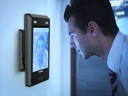

Face Recognition on Edge Devices Using ESP32 and CNN

In this project, I developed a lightweight Face ID recognition system using an ESP32 camera module and a Convolutional Neural Network (CNN). The goal was to create an efficient embedded AI solution capable of performing real-time face recognition while maintaining high accuracy and low computational requirements. The final model contained approximately 5,000 parameters and achieved 99% accuracy when deployed on GPX10 hardware.
Challenges During Data Collection
I collected the facial image dataset directly through the ESP32 camera module. Capturing data on a low-cost embedded camera came with its own challenges — varying lighting conditions, limited resolution, motion blur, and inconsistent face angles. To build a robust dataset, I captured multiple images per subject across different poses and lighting setups. ( Lighting variations, Background noise, Motion blur )
Data Preprocessing
Before training, the raw images were cleaned, resized, and normalized to a consistent input size for the network. I applied data augmentation — small rotations, brightness shifts, and flips — to improve the model's ability to generalize across real-world conditions. ( Image Resizing, Normalization, Data Augmentation )
CNN Model Architecture
The model was a compact CNN built with a small stack of convolutional and pooling layers followed by a dense classification head. Keeping the architecture lightweight was essential so the final model would fit within the memory and compute budget of embedded hardware. ( Convolutional Layers, Max Pooling Layers, Fully Connected Layers, Softmax Output Layer)
Why CNN?
Convolutional Neural Networks are the natural choice for image tasks because they learn spatial features — edges, textures, and facial structures — automatically, while sharing weights to stay parameter-efficient. This made it possible to reach high accuracy with only ~5K parameters, ideal for edge deployment.
Model Training
The network was trained on the preprocessed dataset, monitoring training and validation accuracy to avoid overfitting. (optimizer-Adam, loss function -categorical_crossentropy, epochs - 100, and batch size -128.)
Model Performance
After training and evaluation, the model achieved:
| Metric | Result |
|---|---|
| Model Size | ~5K Parameters |
| Accuracy | 99% |
| Deployment Platform | GPX10 |
| Inference Type | Real-Time |
Applications
This kind of on-device face recognition is well suited to biometric authentication, smart door locks and access control, attendance systems, and privacy-friendly applications where data never leaves the device. ( Smart Door Locks, Attendance Management Systems, Access Control Systems )
Key Learnings
- Careful data collection matters more than model complexity on the edge.
- A small, well-designed CNN can rival larger models for narrow tasks.
- Preprocessing and augmentation are critical when data is limited.
- Hardware constraints shape every design decision in embedded ML.